拒绝偏科，回归实用：极氪7X，为家庭用户打造的一款“正常”的纯电 SUV
一、送娃上学的好帮手
作为家长已经完成 节奏的 切换成 开学模式 ，每一个上学的早晨都是开极氪7X 送儿子上学，即使来回才 9km 不到，偶尔也会在开车的时候感慨自己当初的选择是完全没有错的。

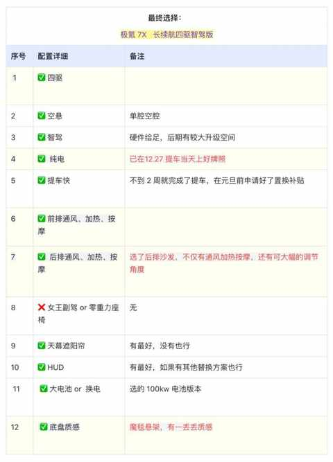
小学生家长的早上都是紧凑有序的，通常6 点多起床准备早饭，7 点喊儿子起来铲猫砂，7 点 20 左右等电梯下楼去地下车库。
7 点 23 分左右抵达地下车库，大部分时候是这样的：
PS：如果偶尔出现未解锁的情况，就得把手机掏出来打开极氪 APP 解锁
1）车亮灯+自动解锁
- 结合着解锁的声音，仪式感满满
2）先让儿子去后排，我也把书包和饭盒放在座位上
- 门把手是弹出式的，当手握上门把手的时候被感应到，门会自动开一个缝，这样小朋友也能轻松拉开车门
3）拉开主驾车门上车，系安全带
4）右脚踩住刹车，右手往下拨动怀档，快速切成 D 档
5）踩电门，随即快速 打满 方向盘，完成掉头操作，出发去学校。
整个操作一气呵成，而 EVA 也能起到关键作用，一般这种需要手眼脚高度协作的时刻， 一句 “hi eva” 便能让 它帮忙调空调和播放音频或其他临时想到的操作。
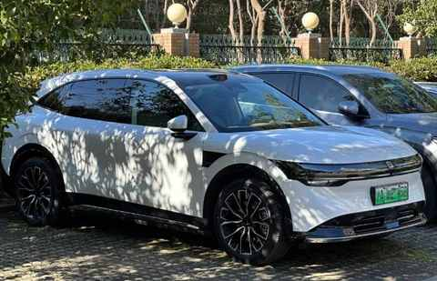
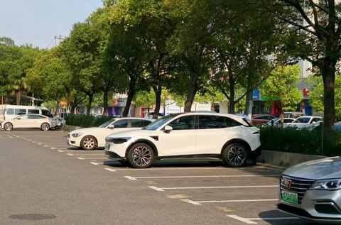
提车快 9 个月， 开了 17000 多公里 ，早就过了新鲜劲的时候，但遇到好天气在停好车之后，依然会忍不住拍张照。
二、 一款“正常”的纯电 SUV、
作为一辆纯电的家用 SUV，“正常 ” 就是一个极其重要的属性。
① 不突兀的造型
作为一款家用 SUV，不能完全没有个性，也不适合太有个性！
这个度极氪 7X 就拿捏的挺好：方正中带一丝圆润，在很多场景下都能完美融入，以下是一些日常的随手拍：
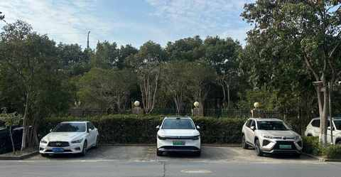
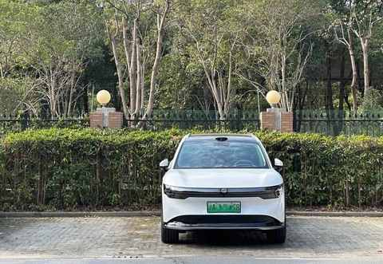
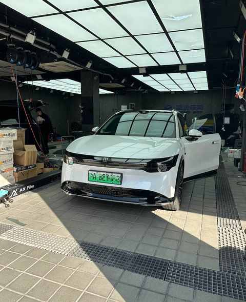
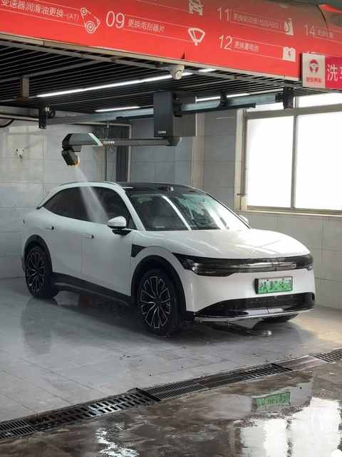
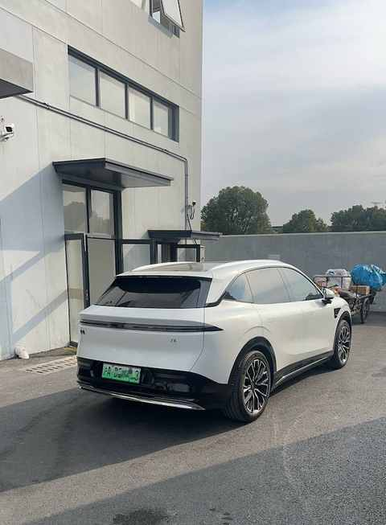
② 充足且实用空间
1）后排空间足
前排自不必说，后排目前没遇到亲戚朋友说空间不足的。
当时约的上门试驾，先试乘，体验后排之后再试驾：身高 177cm，体重 75kg的我感受下来后排空间充足，除非儿子身高长到2m。
在7X 前后排做到了平权，让家人能舒适在坐的后排，有好的乘坐体验。
2）有惊喜的后备箱
后备箱是中大型 SUV 的正常表现，满足一家三口长途出行的所有需求。
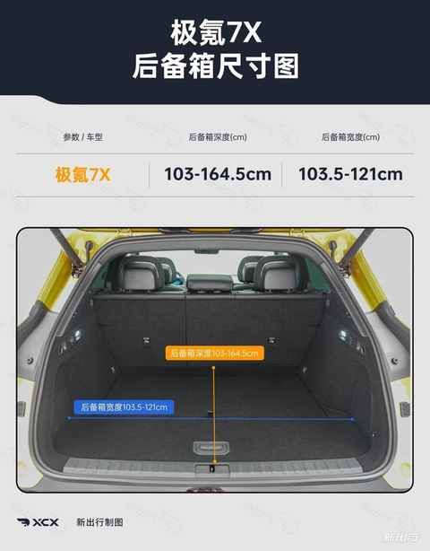
但其下沉空间超出预期，深度和宽度足够容纳很多物件。
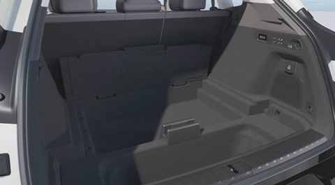
以至于我日常使用中后备箱基本是空的，需要用的物件都在下沉空间：
- 新能源汽车随车充
- 一箱纯净水
- 充气泵
- 手电筒
- 其他杂物
- ……
③ 相当不错的底盘调教
对底盘的感知是偏不观的，因为我开的车偏少，能感知到 7X 的底盘是不错的。
1）变道丝滑
任何时候，变道的整个过程都很丝滑，变道的时候很自信，特别是早上送娃上学需要争分夺秒的时候。
2）操控性好
不论速度快慢，基本都是指哪打哪，偶尔激烈点驾驶也不会难以招架。
3）无侧倾感
上一个车在速度稍快的时候过弯能明显感知到车身的侧倾感，因为我的腹肌都开始发力了，后面试驾乐道 L60 能感知到车对侧倾的抑制，有一个反方向的力。
但是开7X 接近8 个多月以来，从未有过侧倾的感觉，不管是在城区道路、山区道路还是在高速上都如此。
④ 正常的尺寸
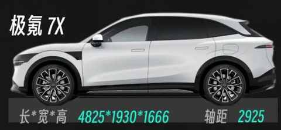
不得不说，有的车真的过大了，会影响到日常的使用体验。
7X 的尺寸很正常很合理， 不到4m9长，没有2m宽，日常很方便停车，即使是立体车位也能比其他尺寸大的纯电 SUV 更快的停进去。
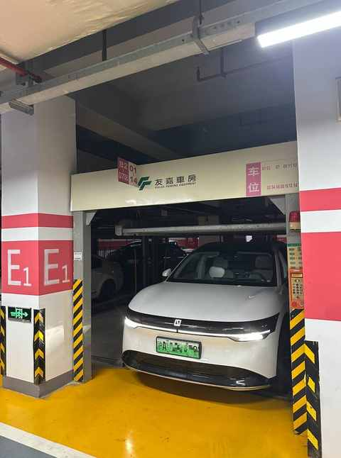
⑤ 丰富和实用的配置
有一些在其他车上需要选配的功能在 7X 上都是标配，一款正常的车就应该和 7X 一样把大部分配置都做成标配！
- ✓ 天幕电动遮阳帘（防晒还得是物理遮阳帘）
- ✓ 后排 电动升降双侧隐私遮阳帘
- ✓ 后排座椅电动调节+加热
- ✓ 方向盘电动调节+加热（可选配后排沙发）
- ✓ 前排通风+加热+按摩
- ✓ HUD
- ✓ 怀档
- ✓ 液晶仪表盘
- ✓ 两个 50w无线快充
- ✓ 前备箱
- ✓ 辅助驾驶
如果前备箱再大一点点，然后也能电动开启和关闭就完美咯。
三、结语
如果你和曾经的我一样，在考虑换一辆纯电 SUV，不妨去试驾下极氪 7X。
一定先梳理用车需求，然后去多多试驾！
梳理的购车需求：
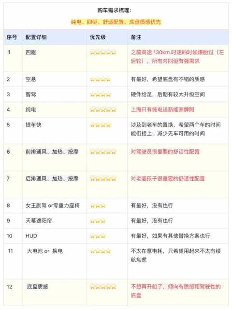
试驾的车型汇总：
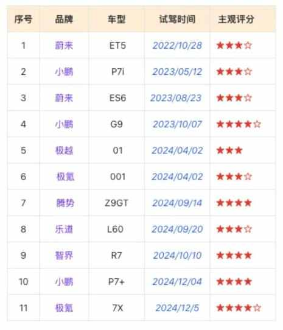
希望以上的分享能有所帮助，让你更快的找到符合自己和家庭需求的那款车。